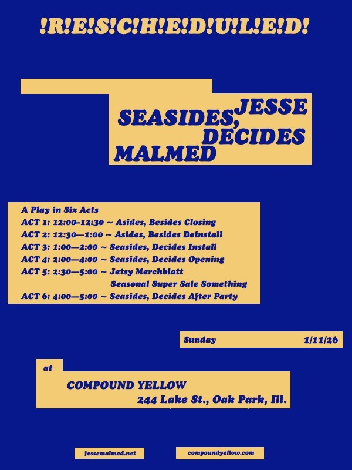

Seasides, Decides: A Play in Six Acts by Jesse Malmed
An invitation— to
A Play in Six Acts
ACT 1: 12:00–12:30 ~ Asides, Besides Closing
ACT 2: 12:30—1:00 ~ Asides, Besides Deinstall
ACT 3: 1:00—2:00 ~ Seasides, Decides Install
ACT 4: 2:00—4:00 ~ Seasides, Decides Opening
ACT 5: 2:30—5:00 ~ Jetsy Merchblatt Seasonal Super Sale
Something